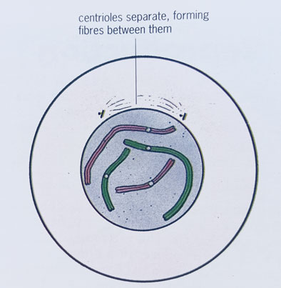
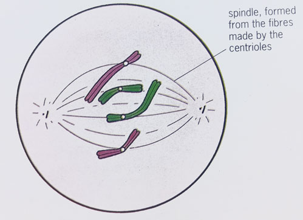
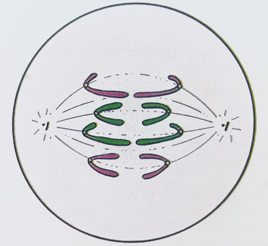
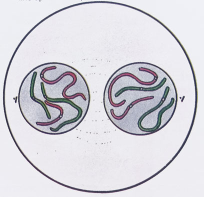
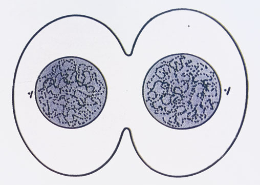

Interphase
By the end of this lesson, you should be able to:
Interphase

Prophase

Metaphase

Anaphase

Telophase

Cytokinesis
Mitosis is the process by which a parent cell divides to produce two genetically identical daughter cells.
It is important for growth, repair, and asexual reproduction in multicellular organisms.
It takes place continuously in the meristematic regions of plants such as the tips of roots and shoots, and in various tissues of animals such as the skin, bone, intestinal lining, etc.